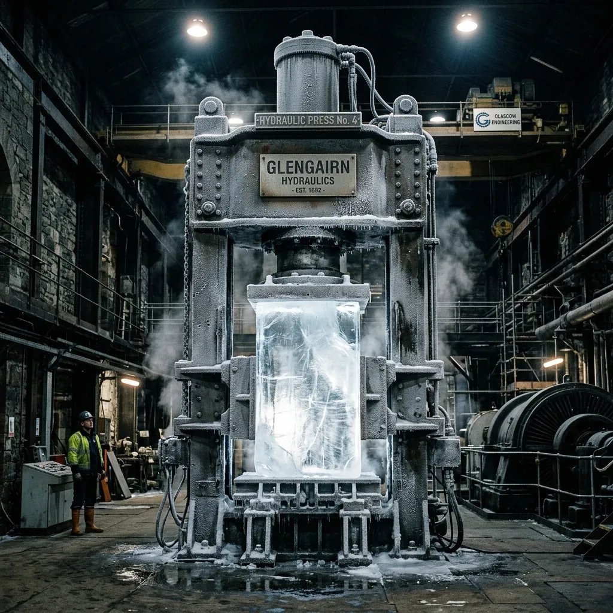

Standard commercial ice is compromised by trapped atmospheric gases and rapid crystalline decay. Null-State Cryogenics treats ice as a heavy industrial material. Operating from a retrofitted Glasgow turbine hall, we use acoustic degassing and 400-ton hydraulic presses to forge absolute-zero-oxygen ice monoliths. These hyper-dense thermal batteries are not sold; they are leased to elite hospitality venues to provide flawless, sustained temperature control for dry-aging vaults and structural beverage programmes without diluting the core product.
The Mechanics of Hyper-Compression
Water's natural freezing process is inherently flawed, trapping micro-fissures of oxygen that accelerate structural collapse under ambient hospitality temperatures. To achieve our signature zero-state density, we completely bypass standard atmospheric freezing. Raw Scottish municipal water is first stripped of all mineral and gas impurities via industrial reverse osmosis and intense acoustic cavitation.
The de-gassed liquid is then transferred into reinforced steel moulding columns and subjected to 400 tons of hydraulic pressure while ambient temperatures are dropped to minus forty degrees Celsius. This forces the water molecules into an unnaturally tight crystalline lattice, creating an ice monolith that possesses the structural integrity of concrete. Because it entirely lacks internal oxygen pockets, a Null-State block melts at precisely one-quarter the speed of conventional artisanal ice, absorbing massive amounts of ambient heat without weeping excess moisture into your dry-aging cellar or premium spirit reserves.
Thermal Ballast Subscription
The Null-State operational model operates strictly on a closed-loop thermal lease; you do not own the water, you are leasing a sustained thermodynamic state. Standard ownership of ice guarantees material degradation, but our infrastructure ensures absolute temperature continuity for your structural beverage programmes. We execute a weekly crane-lift exchange protocol at your venue, seamlessly rotating exhausted monoliths with fresh units straight from our Glasgow foundry. All sealed meltwater is meticulously recovered during this swap. There is zero local wastewater output for your facility to manage. The recovered volume is transported back to our central facility, where it undergoes a complete re-purification cycle before hydraulic re-compression. This guarantees that your dry-aging cellar maintains optimal thermal limits without compromising environmental mandates. Venue operators requiring uninterrupted thermal stability can review our leasing parameters.
View Lease ContractsStructural Vitrine Infrastructure
Industrial ice necessitates heavy-duty, marine-grade architecture capable of handling extreme structural loads. Null-State installations demand exact physical parameters to integrate our hyper-compressed monoliths into high-end hospitality venues. We specify the deployment of 316-grade stainless steel drainage plinths, selected for their absolute resistance to continuous moisture and ambient chloride exposure. These plinths must be encased within heavy argon-sealed glass display units, ensuring strict atmospheric separation from ambient room conditions. More critically, facility managers must verify and implement required floor load-bearing reinforcements. A standard Null-State monolith deployment constitutes a half-ton installation; standard commercial flooring cannot sustain this concentrated point-load without catastrophic failure. All infrastructure must meet our engineering benchmarks before a thermal lease is granted. Exacting adherence to these structural vitrine hardware specifications guarantees both venue safety and the maximum thermodynamic efficiency of the monolith.
Download Hardware SpecsPhase-Change Metrics
Our monoliths undergo rigorous thermodynamic tracking to verify their resistance to ambient hospitality environments. When exposed to an uncontrolled ambient baseline of twenty-one degrees Celsius, a standard Null-State structure records a precise melt-water output of exactly 4.2 litres per one hundred hours. This exceptionally low phase-change metric confirms the unparalleled stability of our zero-oxygen crystalline lattice. Do not rely on marketing claims; trust strict engineering data. Verification of our thermal stability comes directly from leading industry directors. James Macintyre, Cellar Director at a Glasgow Michelin-star venue, reports:
"The Null-State block maintains a rigid thermal perimeter within our dry-aging vault. It provides sustained, heavy temperature suppression with absolutely zero atmospheric weeping. The moisture control is absolute, leaving our aged inventory entirely uncompromised by excess ambient humidity."
This is verification through applied thermodynamics.
Hospitality Integration FAQ
How do we calculate point-load limits for suspended floors?
To safely integrate our half-ton monoliths onto suspended flooring, your structural engineer must calculate the precise point-load distribution across the designated joists. We supply specific footprint dimensions for our 316-grade stainless steel plinths, allowing accurate stress modelling to prevent critical floor deflection or failure.
Does the plinth integrate with existing HVAC drainage lines?
Yes. Our structural vitrine hardware features a sealed secondary drainage manifold designed to interface directly with standard commercial HVAC condensate lines. Because our closed-loop system recovers primary meltwater, this secondary drain strictly manages any external condensation forming on the outer argon-sealed glass during high-humidity shifts.
What are the pallet-jack clearances required for service corridors?
The weekly crane-lift exchange protocol demands a minimum service corridor width of 1200 millimetres. Our specialized delivery pallet-jacks require a 150-millimetre ground clearance and a turning radius capable of navigating ninety-degree junctions under a full 500-kilogram dynamic load without compromising surrounding venue architecture.
What is the emergency subscription pause protocol?
In the event of sudden venue closure or catastrophic HVAC failure, you may initiate an emergency subscription pause. Our Glasgow foundry logistics team requires a twelve-hour notice to execute an emergency extraction of the active monolith, sealing the thermal loop and halting billing until operations resume.
How does the system meet health board compliance for sealed lines?
Our completely closed-loop meltwater recovery system satisfies all municipal health board regulations regarding wastewater cross-contamination. The primary internal meltwater is sealed within the structural base, entirely isolated from your venue's open drains, preventing any risk of bacterial backflow into the operational beverage or dry-aging environment.